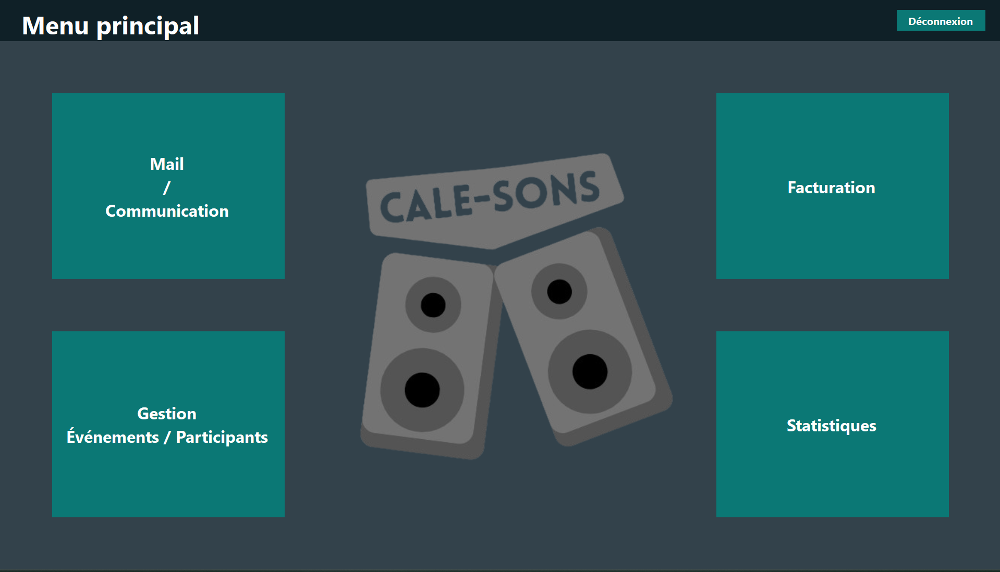

Projet d'atelier de profesionnalisation - CaleSons (application C#)
CaleSons est le dernier projet réalisé durant ma deuxième année de BTS SIO. L'objectif était de réaliser 3 applications pour gérer des évènements et la gestion des utilisateurs.
Ce projet à été réalisé en équipe de 4 avec une méthode agile (SCRUM) en 9 semaines. L'application C# avait pour but de gérer le backoffice.
L'application peut :
- Gérer les évènements, les utilisateurs, les lieux et les sponsors (en CRUD).
- Consulter les statistiques d'un évènement (nombre de place réservées, taux de remplissage, etc), les statistiques des utilisateurs (nombre d'évènements réservés, etc) et, les statistiques des sponsors (nombre d'évènements sponsorisés, etc).
- Consulter les mails envoyé aux administrateurs directement depuis l'application et, l'envoie de mail pour un utilisateur précis ou pour un groupe d'utilisateurs (ex: tous les utilisateurs ayant réservé pour l'évènement X). Il permet aussi d'utiliser des modèles de mail (avec possibilité d'en créer/modifier) pour un envoie plus rapide.
L'application est développée en C# avec le framework .NET et utilise une base de données MySQL pour stocker les données.
Ce projet m’a permis de consolider mes connaissance en C#.